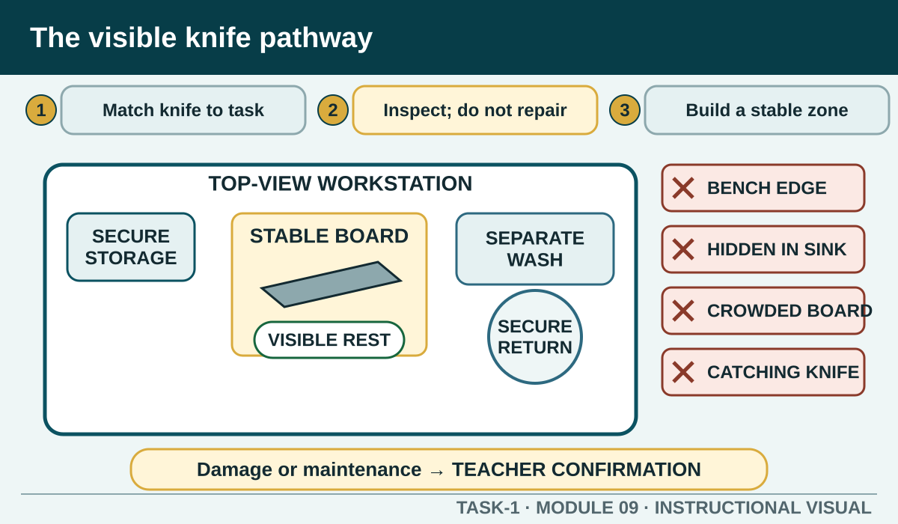

Select and handle kitchen knives through a stable work zone, authorised cutting demonstration, controlled transport, washing and storage without teaching unsupervised sharpening.
Learning intention
What success looks like
Matches the knife and board to the nominated task
Includes visibility and stable-zone controls
Keeps technique within teacher demonstration
Contains no sharpening instruction or invented angle
Core ideas
Build the complete picture
1
Match the knife to the authorised cutting task
2
Inspect condition without attempting maintenance
3
Build a stable cutting zone
4
Use only the demonstrated cutting method
Visual explanation
The visible knife pathway

A top-view station traces one knife from storage to stable board, controlled cutting zone, visible temporary rest, separate wash point and secure storage. Red crossed paths show bench edge, hidden sink, crowded board and attempted catch. Maintenance exits to Teacher confirmation.
Worked example
Inspect condition without attempting maintenance
Before use, check that the handle is secure, the blade is undamaged and clean, and the knife is in the condition required for controlled cutting. A damaged, loose or unsuitable knife must be kept from use and reported.
Observed evidence: Before a fictional produce task, the learner feels movement between a knife handle and blade during the condition check. No cutting has begun. Decision and reason: They decide the knife is unsuitable because a loose handle can reduce control; using less force or choosing soft food would not remove the defect. Safe action: The learner keeps the knife visible and out of use, reports it and follows the teacher's direction for secure handling of the defective item. They select only a demonstrated replacement. Result: The task proceeds without improvising repair or sharpening. Next check or record: The learner checks the replacement handle, blade, board and work zone, then records the loose-handle observation.
Question the room
A learner finds a knife with a loose handle. What should happen?
Use it for soft food only.
Keep it from use and report the condition so an authorised replacement or action can occur.
Wrap the handle with a cloth and continue.
Apply
Kitchen hazard hunt
The pictured training kitchen has been deliberately staged with eight problems before a practical begins. No equipment is operating and no person is at risk. Treat it as a visual inspection, not permission to recreate the scene.
Inspect the whole photograph before selecting anything.
Find the eight staged problems.
For four hazards, record who or what could be harmed, the immediate safe response and who must be told.
Compare with a partner and resolve one difference by referring to the lesson, not by guessing.
Exit ticket
Action · evidence · next step
Plan the safe use of a knife for one teacher-nominated produce task. Explain selection, condition check, board and work-zone setup, demonstrated technique boundary, transfer, washing and storage.
One action I would take
The evidence I would check
The person or source I would confirm with
My next improvement
1 of 8
Speaker notes and delivery prompts
Open with this purpose: Select and handle kitchen knives through a stable work zone, authorised cutting demonstration, controlled transport, washing and storage without teaching unsupervised sharpening.
Use Match the knife to the authorised cutting task to connect prior learning to the first observable workplace decision.
Model Inspect condition without attempting maintenance by walking through this supplied example: Observed evidence: Before a fictional produce task, the learner feels movement between a knife handle and blade during the condition check. No cutting has begun. Decision and reason: They decide the knife is unsuitable because a loose handle can reduce control; using less force or choosing soft food would not remove the defect. Safe action: The learner keeps the knife visible and out of use, reports it and follows the teacher's direction for secure handling of the defective item. They select only a demonstrated replacement. Result: The task proceeds without improvising repair or sharpening. Next check or record: The learner checks the replacement handle, blade, board and work zone, then records the loose-handle observation.
Ask: A learner finds a knife with a loose handle. What should happen? Confirm the strongest response as Keep it from use and report the condition so an authorised replacement or action can occur..
Listen for this misconception: A loose handle can affect control regardless of the food and does not pass the pre-use check.
Move into Kitchen hazard hunt, then collect the saved response and finish with the source boundary: Authorised source note: Source basis: authorised Cycle 1 knives, equipment and food-preparation learning. Cutting techniques, knife selection, maintenance equipment and supervision remain Teacher to confirm. No sharpening angle or unsupervised sharpening sequence is authorised here.